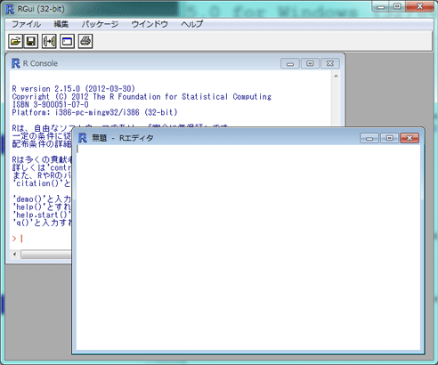
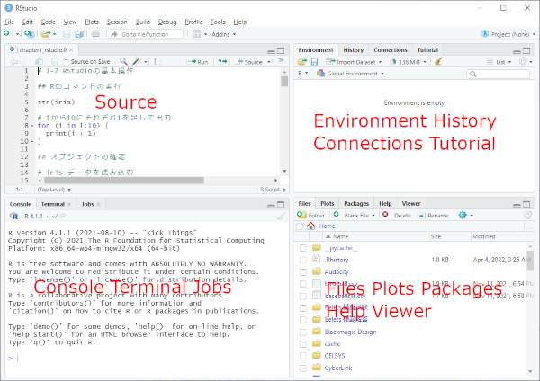

R の操作方法画面は2種類ある。

R起動時に RGui に表示されるウィンドウ。通常はここにコマンドを入力する。
プログラミングなどの長い処理，複雑な処理を行う場合に使用する。
RStudioの操作画面は以下のようになっている。
この中の Console は R の R Console と同じ機能を果たすので，以下の作業は RStudio の Console で行ってもかまわない。

上に書いたように，RStudio の Console で作業を行ってもかまわない。
R Console の > （プロンプト）の後ろにコマンドを入力し，Enter キーを押す。入力したコマンドは，1行ずつ実行される。
入力済みのコマンドは、上下のカーソルキーで再表示させることができる。（履歴）
以下の式を，R Console で直接入力せよ。（頭の番号は不要）
ここで <- は右の値を左の変数に代入することを意味する。
次に，上向きのカーソルキーで履歴をたどることができることを確認せよ。
作業スペースの保存を実行すると，R Console で設定した変数などの情報が保存される。しかし入力した内容が保存されるわけではないので，注意すること。
R Editor はプログラミングや複雑な処理を書くときに使用する。
R Editor を開くには，［ファイル］メニューから［新しいスクリプト］を選ぶ。RStudio では最初から表示されている左上のペインがこれに該当するので，新規に開く必要はない。
ここにコマンドやプログラムを入力する。入力は複数行になってもよく，まとめて実行することができる。
入力したコマンドの実行方法は，R と RStudio で異なる。
カーソル行の1行だけか選択行を実行する場合，実行したい行にカーソルを移動するか実行したい行を選択し，Ctrl ＋ R を押すか，［編集］メニューから［カーソル行または選択中のRコードを実行］を選ぶ。
すべての行を実行する場合，すべてを選択してから Ctrl ＋ R を押すか，［編集］メニューから［全て実行］を選ぶ。
カーソル行の1行だけか選択行を実行する場合，実行したい行にカーソルを移動するか実行したい行を選択し，Ctrl ＋ Enter を押すか，［Code］メニューから［Run Selected Line(s)］を選ぶ。
すべての行を実行する場合，Alt + Ctrl + R を押すか，［Code］メニューから［Run Region］，［Run All］を選ぶ。
作成したコマンドは，［ファイル］メニューから［保存］を選ぶことで R ファイルとして保存できる。なお，古いバージョンでは拡張子［.R］が自動的に付かないので，忘れずに付けること。
１．以下の式を，R Editor に入力せよ。
x <- 3.53
y <- 8.91
x - y
x + y
x * y
x / y
x^2 + y^2
２．これをすべて実行せよ。
３．上で作成したものを，test.R として適当な場所に保存せよ。